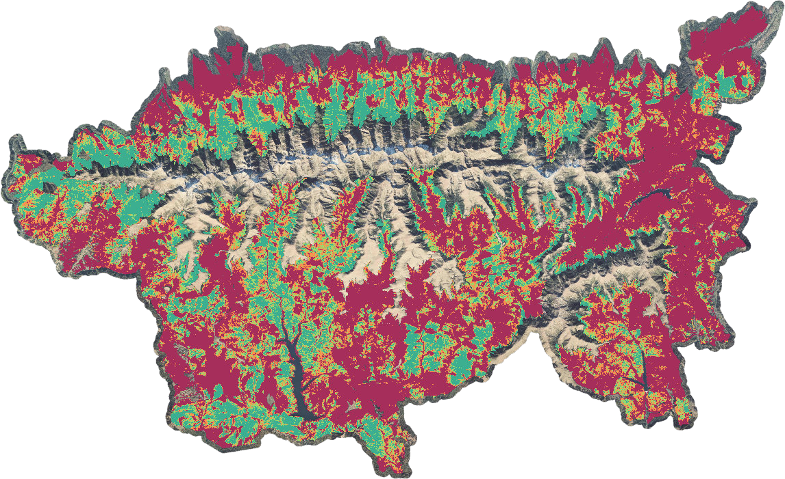

Preprint · September 2026 · under review

Geospatial embeddings detect old-growth forests but buffered spatial validation narrows their advantage over Sentinel features
Foundation-model embeddings and ordinary Sentinel features can detect old-growth forests. However, once training and test sites are kept 10 km apart, the embeddings' initial advantage is less clear. This paper shows why spatial relationships matter when mapping old-growth forests.